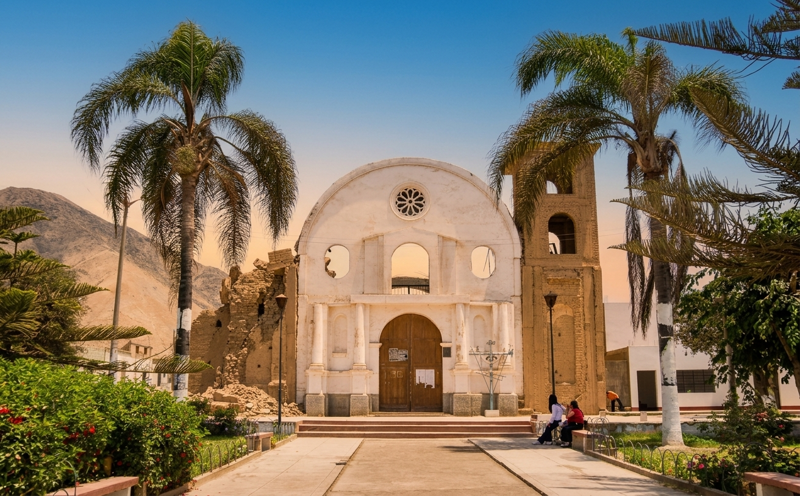

Aventura y deporte
Naturaleza, movimiento y paisajes para disfrutar al aire libre.
- Trekking por lomas y quebradas
- Cabalgata por caminos rurales
- Ciclismo de montaña

Cañete 360 · Distrito de Coayllo
Valle, lomas y legado prehispánico en la tierra de los nísperos.
Acerca del destino
Coayllo es uno de los distritos más antiguos de la provincia de Cañete, ubicado a unas dos horas al sur de Lima. Conocido históricamente como la Tierra de los Nísperos, combina un valioso legado prehispánico y colonial con hermosos paisajes de valle y lomas.
Ruta turística
Sigue esta ruta sugerida para conocer lo mejor del distrito. Cada parada resalta un atractivo y su categoría: aventura, gastronomía o cultura.
Centro histórico con arquitectura colonial y referencias de la antigua doctrina del valle.

Conjuntos prehispánicos que evidencian la ocupación antigua del valle de Coayllo.

Huertos y cultivos que dieron fama al distrito, con nísperos, miel y comida de campo.

Paisajes estacionales y senderos para caminatas con vistas al valle.

Punto panorámico para fotografiar cultivos, cerros y el paso de las nubes.

Vive la experiencia
Estas son las experiencias que no puedes dejar de vivir durante tu visita a Coayllo.
Naturaleza, movimiento y paisajes para disfrutar al aire libre.
Sabores del valle y de la costa que cuentan la historia del distrito.
Historia, tradiciones y patrimonio que siguen presentes.
Datos prácticos
Contacto y reservas
Déjanos tus datos y un asesor de Cañete 360 se pondrá en contacto contigo para registrar tu viaje turístico.